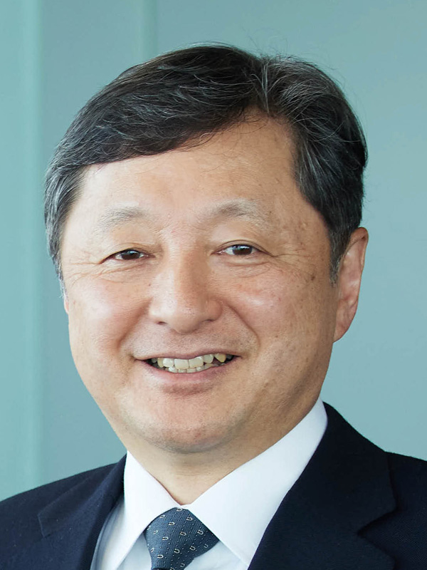
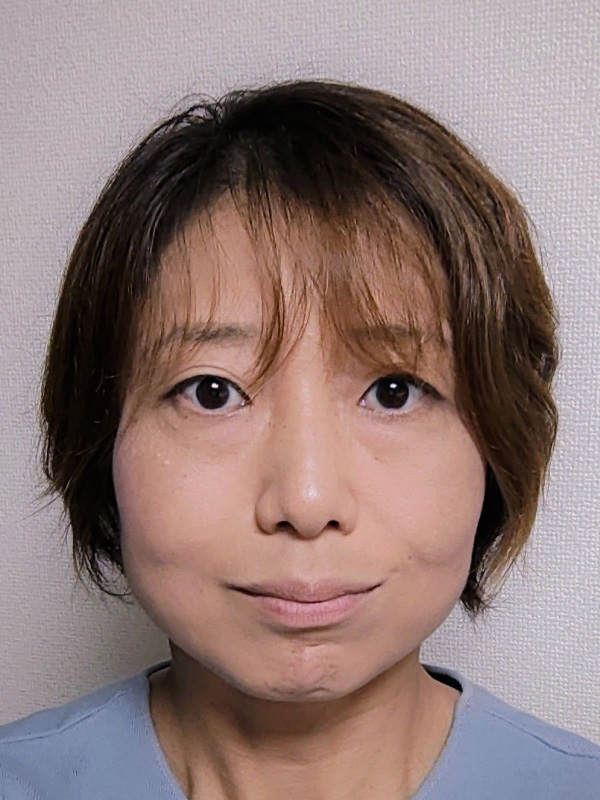
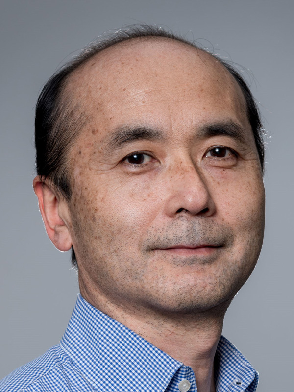

社会の大きな課題であるカーボンニュートラル実現や、パンデミックに代表される有事の際にも負けないレジリエンス強化のために、研究開発型企業の多くがDXを加速させているのは間違いありません。ただ、DXが浸透しているのは、設計や生産、調達などの業務がメインで、企業の競争力の源泉ともいえるR&D業務においては、なかなかDXが進んでいないという実態があります。
R&D業務に求められているのは、複雑化する課題に対してより短時間で解決策を考え、そして実際にアウトプットを出すことです。これを実現するためには、膨れ上がるデータから意味のあるものを体系的に取り出し、それを意思決定に的確に生かす「新しいデータ活用」の姿が必要です。
本セミナーでは、R&Dの効率化を目指す方に向けて、データを活用することで効率的に成果を出すためのポイントをお届けします。実際にデータを活用してR&D業務を変革に導いてきた企業の方々に実体験に基づいて紐解いていただきます。パネルディスカッションなどと併せて、R&D業務にデータ活用がもたらすビジネスインパクトを感じ取ってください。
 開催概要
開催概要
名 称 |
研究開発型企業に求められるR&Dの明日を徹底討論 先駆者たちに学ぶデータ活用の最前線 |
|---|---|
日 時 |
2023年7月6日（木） 13：00～17：30（予定） |
会 場 |
大手町プレイスカンファレンスセンター 2F ホールB 東京都千代田区大手町二丁目3番1号 |
主 催 |
日経BP 総合研究所 |
協 賛 |
エルゼビア・ジャパン |
参加料 |
8,800円（税込） |
 プログラム（予定）
プログラム（予定）
※講演者や講演時間など、プログラムは変更になる場合がございます。予めご了承ください。
13:00～13:05 |
開会の挨拶 |
|---|---|
13:05～13:35 |
【基調講演】AGCの技術開発を加速する開発戦略の背景と新たな価値を生み出すDXの取組み事例 AGC代表取締役 兼 専務執行役員CTO、技術本部長 倉田 英之 氏 1987年旭硝子（現AGC）入社。化学品カンパニー新事業推進部長、米国グループ会社社長、AGC化学品カンパニーの戦略企画室長などを経て、2019年1月に常務執行役員技術本部長。2022年3月より現職。
＜講演概要＞ |
13:40～14:10 |
【講演】技術イノベーションの“深化”と“探索”を目指した「人とAIとの協奏」による挑戦
横浜ゴム
研究先行開発本部 AI研究室 エグゼクティブフェロー・研究室長 小石 正隆 氏 1985年横浜ゴム入社。以来タイヤとゴム材料に関する計算力学の研究開発に従事。業務の傍ら横浜国立大学大学院後期博士課程を修了（博士・工学）。その後、多目的最適化と機械学習に関する研究開発にも従事。CAE研究室 研究室長、小石研究室 理事・研究室長を経て、2020年より現職。「HAICoLab」を提唱し研究開発領域におけるAI活用を推進。2014年には日本機械学会計算力学部門 部門長、2017年からは関東CAE懇話会会長、2022年よりCAE懇話会副理事長を務めている。
＜講演概要＞ |
14:15～14:45 |
【講演】ニーズ反映から素材設計までを加速させる新たな素材開発AI
日本電気
セキュアシステムプラットフォーム研究所 主任 小渕 喜一 氏 前職では、外資系化学メーカーにて、高分子材料の開発を行う一方、機械学習による物性予測モデリングやラボデータパイプラインについての計画策定などに携わる。2021年9月より現職にて、マテリアルズ・インフォマティクス（MI）の研究に従事。高分子をはじめとする有機系のスモールデータ領域での機械学習の応用に関する技術構築のほか、PLMや企業間・部署間連携PFなど素材産業関連の課題を解決するAI活用に幅広く勤しんでいる。
＜講演概要＞ |
14:50～15:10 |
【講演】研究開発型企業の目指す学術データの活用～課題と実態～ エルゼビア・ジャパンプロフェッショナルサービス データ＆アナリティクス 齋藤 美里 氏 2011年入社。ファーマバイオテックプロダクトマネージャー（大学・政府機関）、ライフサイエンスプロダクトマネージャー（企業）、Japan LS Team Leadを経て2020年3月より現職。研究開発型企業向けのAI・MI・機械学習や予測モデルの構築など、論文や化学情報、創薬関連情報などの利用促進に関わる。著書：2022年 「研究開発DX」R&D におけるデータドリブンな意思決定プロセスの導入 技術情報協会出版 等
＜講演概要＞ |
15:10～15:30 |
休憩 |
15:30～16:45 |
【パネル・ディスカッション】R&D業務の理想像を討論※ご登壇者に対するご質問を当日受付ます。 横浜ゴム 日本電気  日本電気 エルゼビア・ジャパン <モデレータ>
＜講演概要＞ |
16:45～16:50 |
閉会の挨拶 |
16:50～17:30 |
講師名刺交換・展示ブース観覧（名刺交換は17時に終了いたします）※当日はお名刺を持参ください。 |

本イベントへのお申し込みには、「日経ＩＤ」への会員登録（無料）が事前に必要となります。
すでに会員の方は、ログイン後、ご登録内容をご確認のうえお申し込みください。
未登録の方は、画面の指示にしたがい、登録を完了させてください。
【お申し込み注意事項】
※お申し込み後のキャンセル、ご送金後の返金はお受けいたしかねます。
代理の方が出席くださいますようお願いいたします。
※参加料のお支払い：請求書払い／クレジットカード払いが選択できます。
お支払方法が「請求書」の方には、後日、請求書を郵送いたします。ご入金は銀行振込でお願いいたします。
なお、振込手数料はお客様のご負担となりますのであらかじめご了承ください。
ご来場のみなさまへ
・37.5度以上の熱がある場合や、風邪の症状がある場合は、来場をお控えください。